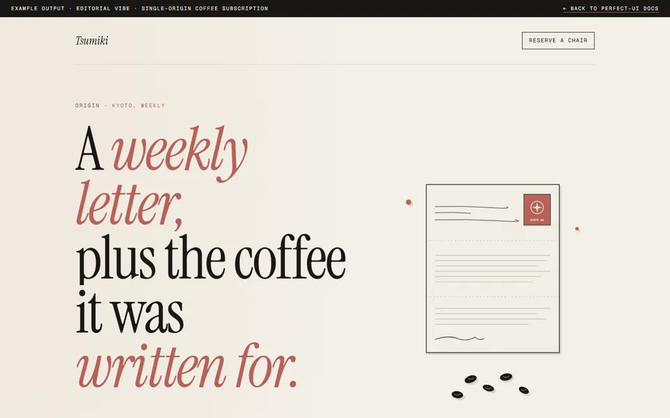
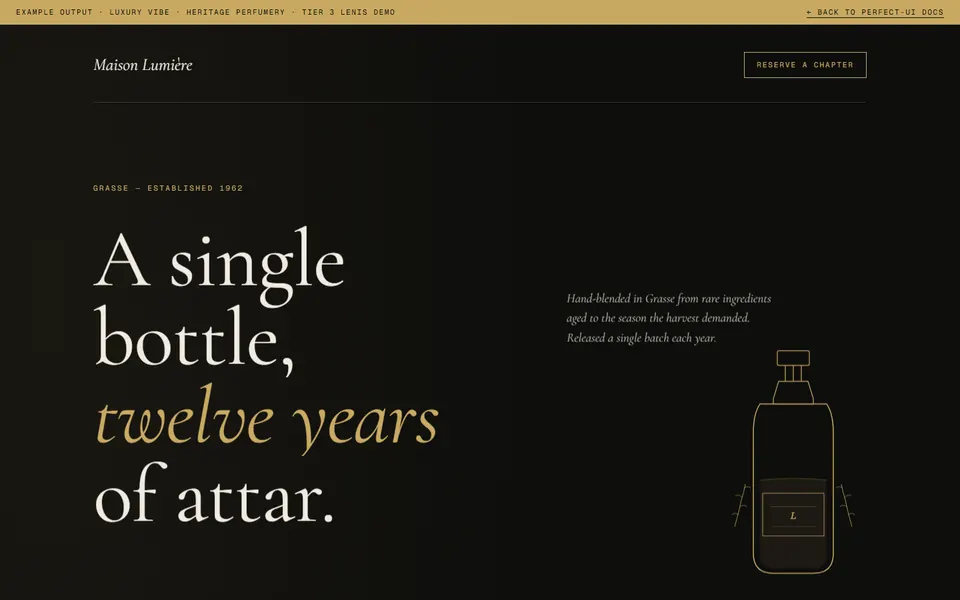
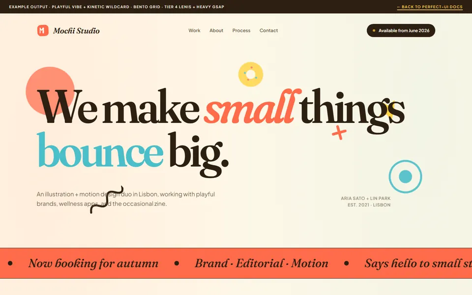

As body text only, IF paired with a distinctive display font (Instrument Serif, PP Neue Montreal, Migra, etc.). Inter alone = AI fingerprint (Tier 3 — compensable but discouraged).
nelson-ui
UI design that doesn't look AI-made.
A Claude Code skill orchestrating vibe discovery, custom icons, 2D illustrations, optional shader effects, and vibe-scaled motion — built to enforce cohesion, not generate slop.
8
Phases
11
Vibe anchors
3
Anti-slop tiers
∞
Page types — 2 special tiers
— Install
One command. No build step. No config.
$
npx skills add smartscalingai/nelson-ui
Auto-discovered. Drops a SKILL.md into ~/.claude/skills/nelson-ui/. Activates on phrases like "design a landing page", "build my portfolio", "redesign this site", or any page-type trigger. No registration step, no slash-command. Skill name lives in frontmatter.
Works with the open npx skills ecosystem — Claude Code, OpenCode, Codex, Cursor, and 40+ AI agents.
— Why
Made because AI pages stack defaults.
12
Landings analyzed
5
AI-generated
7
Human-crafted
10+
Violations stacked / AI page
AI defaults — stacked
- Inter font alone
- Purple/blue gradient hero
h-screeneverywherelucide-reacticons- 3-col equal feature grid
- "Get Started" CTAs
- Round fake stats (10K+, 99.99%)
- Fade-up on every element
Human commitment — singular
- One vibe locked end-to-end
- Custom SVG icon set
- Asymmetric editorial grid
- Vibe-paired typography
- Distinctive display fonts
- Specific draft copy
- Real evidence-based stats
- Vibe-scaled motion intensity
Cohesion is the multiplier on craft. This skill encodes that as enforceable rules.
— Scope
Two tiers. No refusals.
Special tier — rich treatment
landing— marketing, sales, product launchportfolio— work showcase, hire-me, personal site- Type-specific anatomy + Next.js skeleton
- Per-vibe section archetypes
- Full Tier 1/2/3 anti-slop audit
- Evidence-backed (12 marketing landings analyzed)
Generic tier — universal craft
blog,about,pricing,contact,coming-soonerror-page,legal,dashboard,admin,e-commerce- Any custom
--typestring - Generic anatomy + generic Next.js skeleton
- Sections driven by Page-Purpose Exercise
- Universal anti-slop subset (Applicability Matrix)
Universal toolkit applies to both — vibe lock, palette, typography, custom icons, 2D illustrations, visual effects, motion intensity. Companion approaches suggested in § Beyond.
— Pipeline
Eight phases, each with a single concern.
— 00
Detect mode
New build vs redesign. URL or screenshot triggers redesign audit.
redesign-audit-checklist.md
— 00a
Study mode
--study <URL>. URL safety refusal → fetch → DNA extraction (fonts + OKLCH palette + macrostructure) → 3-way branch.
— 00.5
Detect type
Any --type accepted. Routes to special tier (landing / portfolio) or generic tier. No refusals.
— 00.5b
Component-scope
Multi-signal detect: brief ≤30 words + UI keyword + --component flag. Emits component + .preview.* 8-state wrapper.
— 01
Discovery
Inline brainstorm. Brief branches per type. Locks vibe + audience + conversion goal.
workflow-brainstorm.md
— 02
Visual direction
Lock palette, typography pair, spatial language, effect layer, motion intensity. Commitment audit ≥48/60.
visual-direction-guide.md
— 03
Custom icon set
Direct SVG or AI-generated + traced. Single stroke weight, single fill style, fresh metaphors.
custom-icon-pipeline.md
— 04
2D visual assets
Pick illustration style from 11×11 catalog. Cohesion across all assets. Static 3D renders as PNG.
2d-illustration-catalog.md
— 05
Visual effect layer
Optional. Shaders, particles, atmospheric. CSS-first; WebGL only when CSS can't. NO 3D models.
visual-effect-patterns.md
— 06
Plan
Inline plan protocol. Type-aware: landing sections vs portfolio sections + case study route vs generic page-purpose-driven.
workflow-plan.md
— 07
Implement
Pre-emit <design_plan> verification gates code emission. Apply locked motion intensity. Custom icons only.
— 08
Anti-slop audit
Inline tier-filtered audit. Tier 1 hits = block ship. Grep + visual checks. Marketing-only rules skipped for non-marketing types.
workflow-audit.md
— Vibes
Eleven anchors. One + one wildcard. Locked at design time.
Vibe
Palette
Typography
Motion
Illustration
Minimal
Söhne + Söhne Mono
1/3
SVG geometric
Editorial
Migra + GT Sectra
1-2/3
Silkscreen poster
Brutalist
PP Neue Machina + PP Neue Montreal
0-1/3
Risograph
Retro-futuristic
PP Neue Machina + JetBrains Mono
3/3
Synthwave gradient
Organic
Tobias + Lyon Text
2/3
Watercolor
Luxury
PP Editorial New + Reckless Neue
1-2/3
Engraved line-art
Playful
Boing + Plus Jakarta Sans
2-3/3
Cut-paper collage
Industrial
Söhne Breit + Söhne Mono
0-1/3
Architectural schematic
Art-deco
Migra + Reckless Neue
1-2/3
Geometric sunburst
Glass-tech
PP Neue Montreal + JetBrains Mono
2-3/3
Static 3D render
Hand-crafted
Tobias + Reckless Neue
0-1/3
Hand-drawn ink
— Anti-slop
Tier 1 auto-fail. Tier 2 caution. Tier 3 compensable.
Tier 1 — Must fix
Auto-fail patterns
DM Sans + Space Groteskpair- Purple/blue gradient hero with gradient text
lucide-react/@heroiconsimports- Two equal-weight CTAs in hero
h-screenutility class- 3-column equal feature card grid
- Tailwind density > 200 utilities
- Generic CTAs ("Get Started", "Sign In")
- AI-generated 3D model as hero subject
OrbitControlsin landing/portfolio
Tier 2 — Caution
Compositional drift
- Generic browser-mockup right-half of split hero
- Friendly bullet checkbox reassurance row
- Round fake stats (10K+, 99.99%)
- AI cute illustration as hero
- Centered hero + centered H1 at high variance
- 3D model used purely as decoration
- Style mixing across 2D illustrations
- Generic fade-up motion on every element
ease-in-out0.3s as universal duration
Tier 3 — Compensable
Cohesion ≥ 8/10 saves
Interbody when paired with distinctive display- AI cliché phrases in non-load-bearing copy
- Generic startup names (Acme, Globex)
- Title Case On Every Header
Allowed only IF visual craft cohesion ≥ 8/10. Override path: user requests twice + reason logged.
— In practice
Four real flows. One discipline.
"Design a landing page for a new specialty coffee subscription service targeting home-brewing enthusiasts in Japan. Vibe should feel editorial and warm."
- Phase 0 detects
--new(no URL provided) - Phase 0.5 detects
landingfrom "landing page" - Phase 1 → inline brainstorm locks vibe = editorial + agrarian wildcard, 3 inspirations confirmed
- Phase 2 → palette cream
#F5F1E8+ ink + dusk-rose accent · Migra + GT Sectra · asymmetric editorial · 3D declined - Phase 3 → 8 custom SVG icons (nav-mark, brewing-step icons, social marks)
- Phase 4 → silkscreen-style poster hero illustration via text-to-image with style control
- Phase 6-8 → inline plan + implement + Tier 1/2/3 audit; ships
Editorial coffee landing with custom assets, vibe-paired type, zero AI slop. No 3D, no icon library, no purple gradient anywhere.
See the example page"Redesign this portfolio: example.com — I want it to feel more elegant and let my work speak. Currently has too many flashy hover effects."
- Phase 0 detects
--redesign(URL provided) - Audit per
redesign-audit-checklist.md— keep portfolio cover photo + custom monogram; kill hover-effect overload, skill-bar percentages, "Hi I'm passionate" opener - Phase 0.5 detects
portfolio - Phase 1-2 → elegant vibe locked · PP Neue Montreal display · off-white palette · atmospheric spatial
- Phase 3-5 → minimal icon set (5 icons) · editorial environmental portrait · 3D logo accent approved
- Phase 6-8 → Plan with
app/work/[slug]case study route → audit catches "Welcome to my portfolio" leftover copy → fixes → ships
Restrained portfolio that lets the work breathe. Atmospheric, not flashy. Audit-caught copy leftover prevented a slop-shipped redesign.
"Design a blog landing for a typography studio's writing. Editorial vibe, long-form serif."
- Phase 0 detects
--new - Phase 0.5 detects
blogkeyword → generic tier - Phase 1 → generic brief with Page-Purpose Exercise (job = inform, marketing-intent = true)
- Phase 2 → palette cream + ink + ochre accent · PP Editorial Old + Söhne · asymmetric editorial · motion 1-2/3
- Phase 3 → 3 custom SVG icons (tag-glyph, link-arrow, social mark)
- Phase 4 → letter-form silkscreen hero accent
- Phase 6 → generic plan: nav + hero + article-list + footer (page-purpose, not template)
- Phase 8 → audit runs
[universal]+[marketing-only]subset; passes
Editorial blog landing with the same craft discipline as a landing page. Section stack picked from generic anatomy, not templated.
"Design a dashboard for a self-hosted analytics tool. Brutalist vibe, dense info, dark mode."
Evidence-base disclosure (logged at Phase 0.5): skill's evidence base (12 marketing landings analyzed) does NOT cover dashboard / admin / e-commerce / app-surface patterns directly. Universal craft toolkit still applies. Output quality is best-effort.
- Phase 0 detects
--new - Phase 0.5 detects
dashboardkeyword → generic tier + disclosure logged - Phase 1 → generic brief (data displayed, user role, page-purpose = display data, marketing-intent = false)
- Phase 2 → brutalist vibe · Söhne Mono + Söhne Breit · hi-contrast + electric-yellow accent · motion 1/3 CSS-only
- Phase 3 → 6 custom icons (data-source markers, filter glyphs, sort-direction, refresh-state)
- Phase 4 → schematic illustration for empty-states
- Phase 6 → app-shell (sidebar + topbar) + filter-bar + data-grid + empty-state — no hero, no CTA, purpose-driven
- Phase 8 → audit runs
[universal]rules only; marketing-only rules skipped
Dashboard with vibe lock, custom icons, motion discipline — without false-positive audit warnings about marketing patterns that don't apply.
— Showcase
Live outputs shipped from the skill.
Each card opens a real example file demonstrating one vibe × type × macrostructure combination. WebP previews are 16-30 KB each (auto-captured at 1440×900, optimized).

Coffee subscription
Tsumiki — specialty single-origin coffee, weekly letter from the roaster.
Open example
Heritage perfumery
Maison Lumière — single bottle, twelve years of attar, hand-blended in Grasse.
Open example
Illustration duo
Mochi Studio — illustration + motion duo in Lisbon, six selected projects in Bento Grid.
Open example
— Mandates
Ten mandates. Non-negotiable.
Mandates are doctrine — what the skill MUST and MUST NOT do. Anti-slop tiers above are audit patterns the skill greps for. Mandates are the why behind tier-1 patterns.
— 01
NO emoji — anywhere
Not in copy, headings, or as icons. Use a custom SVG instead.
— 02
NO icon libraries
Lucide, Heroicons, Phosphor, Tabler, Font Awesome, Material, react-icons — all forbidden.
— 03
NO AI slop defaults
Inter alone, purple/blue gradient hero, two equal CTAs, "Elevate / Seamless" copy, fabricated metrics, meta-label headers, hero filler text.
— 04
NO 3D models as hero
Static render → PNG OK. Real-time GLB forbidden (user-product GLB needs logged override).
— 05
3D = effects only
Phase 5 = shaders, particles, atmosphere. CSS first; WebGL only when CSS can't.
— 06
Always propose effect layer
Every site gets the proposal. User accepts or declines. Default = decline.
— 07
Vibe before pixels
Never write code or generate assets before vibe + palette + typography are locked.
— 08
Type-aware where it matters
Landing / portfolio get rich anatomy. All other types use generic anatomy + skeleton. Phase 8 audit filters per --type.
— 09
Diversify each run
Macrostructure must differ from last 3 entries in .nelson-ui/log.json. Vibe / dials should differ from last entry.
— 10
Pre-emit verification
Phase 7 entry gates code behind a 10-field <design_plan> block. Any FAIL routes back. Stamped in CSS + plan.md.
— FAQ
Questions already asked.
Yes. The skill ships as SKILL.md via the open npx skills ecosystem (vercel-labs/skills) — installs into Claude Code, OpenCode, Codex, Cursor, and 40+ agents. Same file, same behavior.
A named page-shape archetype, independent of vibe. Seven exist: Marquee Hero, Bento Grid, Long Document, Manifesto, Stat-Led, Workbench, Letter. Vibe locks the surface; macrostructure locks the shape. Diversification rule: macrostructure pick must differ from the last 3 entries in .nelson-ui/log.json.
Generally no. Direct evidence from 12 real landings showed 0/7 human-crafted pages used real-time 3D models. Use one of these instead:
1. Static 3D render → 2D image (recommended) — render in Blender / Spline / KeyShot, export PNG/WebP.
2. 2D illustration matching vibe — from the 11×11 catalog.
3. Shader effect for atmosphere — CSS first, WebGL only when CSS can't.
User-provided real-product GLB allowed with double-confirm + logged override.
At Phase 7 entry, nelson-ui detects motion intensity 3/3 OR brief keywords (GSAP, ScrollTrigger, scroll choreography, scrub, pin section). If the gsap-* skills are installed at ~/.claude/skills/gsap-*, it invokes them via active Skill calls. If missing, it suggests npx skills add greensock/gsap-skills once, then falls back to inline patterns — non-blocking. See references/gsap-integration.md.
Runs URL safety refusal first (7 patterns blocked: themeforest, framer-templates, dribbble shots, behance galleries, gumroad UI-kits, webflow-templates, generic marketplaces). If safe, fetches the page as untrusted data, extracts DNA (fonts + OKLCH palette + macrostructure + nav/footer archetypes), emits a diagnosis report. You pick a 3-way branch: build with this DNA / lock DNA to design.md / stop. Diversification rule suspended when build-with-DNA chosen.
Multi-signal detect — nelson-ui counts: brief ≤30 words + UI element keyword (button / card / modal / dropdown / nav / form / etc.) + --component flag + single-file target + "just the X" phrasing. 2+ signals → component scope confirmed. 1 signal → skill asks "one component or whole page?". Component scope skips macrostructure / hero / nav-footer / Phase 8 visual / log.json and outputs the component + .preview.* 8-state wrapper.
Add palette + typography pair to references/visual-direction-guide.md, add an archetype mapping to assets/nextjs-skeleton/section-archetypes.md, add an illustration-style row to references/2d-illustration-catalog.md, add a 3D-pairing row to visual-direction-guide if relevant. Then run validate.
— Beyond
Companion approaches for deeper architecture.
Skill no longer refuses any page type. For these specific deeper-architecture cases, another workflow is genuinely a better fit — nelson-ui suggests, doesn't force-redirect. The visible page surface stays in scope regardless.
If you need
Suggested approach
Full app architecture, complex client-side state, deep multi-page IA
General frontend engineering workflow
Full e-commerce backend (products, cart, checkout, inventory, payment)
Dedicated e-commerce platform workflow
Exact design replication from screenshot / Figma reference
Vision-driven design-to-code workflow